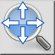
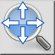
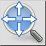
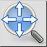

Zoom panorámico
Barra de herramienta / icono:
 

Menú: Ver > Zoom > Zoom panorámico
Acceso directo: Z, P
Comandos: zoompan | zp
Esta es una traducción automática.
Barra de herramienta / icono:
 

Menú: Ver > Zoom > Zoom panorámico
Acceso directo: Z, P
Comandos: zoompan | zp
Desplazarse significa moverse (desplazarse) en un dibujo. La forma más
rápida de hacerlo es usar el botón central del ratón y mover la vista de forma
similar a como moverías un papel: presiona el botón central del ratón y
mantenlo presionado mientras mueves el dibujo. Si su ratón no tiene un botón
central, puede presionar la tecla Control (Mac OS X: tecla Comando) y utilizar
el botón izquierdo del ratón.
Alternativamente, puede activar esta herramienta y luego mover la vista
con el botón izquierdo del ratón sin pulsar ninguna tecla.
Haga clic con el botón derecho del ratón cuando haya terminado.